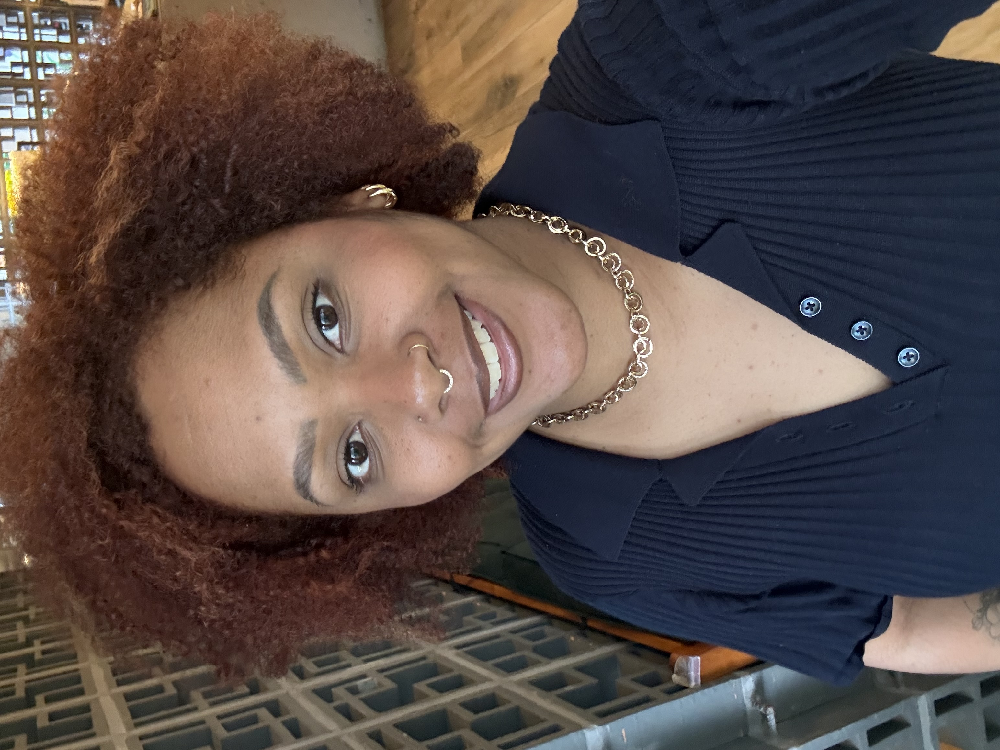

Tudo começou em um belo dia, quando estava fazendo progressiva em um salão e percebi que passava quase o dia inteiro ali. Foi nesse momento que decidi buscar um curso para aprender a escovar e cuidar do meu cabelo, sem precisar depender sempre do salão.
Pesquisando, encontrei a Embelleze. Fiz minha inscrição e, um mês depois, iniciei as aulas.
No início, meu objetivo era apenas aprender a cuidar do meu próprio cabelo. Mas, a cada técnica que dominava e a cada transformação que realizava, fui me apaixonando ainda mais pela área da beleza e descobrindo minha verdadeira identificação com ela.
Comecei a fazer progressiva em mim mesma, mas com o tempo percebi que estava cansativo e comecei a cogitar assumir meu cabelo natural. Essa decisão só se concretizou quando entrei para trabalhar no salão Lunablu, que me deu coragem para valorizar meus cachos.
Em maio de 2017, ingressei na equipe da Clinica dos Cachos. Na época, meu cabelo ainda estava curto, pois havia feito o Big Chop — corte que remove toda a química. Entrei como auxiliar de cabeleireiro e, em novembro de 2019, fui aprovada como Profissional de corte.Desde então, atuo com dedicação na unidade Vila Mariana da Clínica dos Cachos.
Ao longo dessa jornada, percebi que a beleza não é apenas sobre estética, mas também sobre autoestima e identidade. Cada cliente que sente confiança ao olhar no espelho depois de um corte ou tratamento me mostra que escolhi o caminho certo.
Trabalhar na Clínica dos Cachos tem sido uma experiência transformadora. Ali aprendi que cada fio conta uma história e que cuidar dos cabelos é também cuidar das emoções. Ver mulheres e homens assumindo seus cachos, muitas vezes após anos de química, é algo que me inspira diariamente.
Minha trajetória, que começou com o desejo de cuidar apenas do meu próprio cabelo, se tornou uma aprofissão e missão de vida: ajudar outras pessoas a se reconectarem com sua beleza natural.
Mais do que cortar ou tratar cabelos, meu objetivo é proporcionar momentos de bem-estar e confiança. Afinal, assumir os cachos é também assumir quem você é.
✨ Venha me visitar e conhecer de perto o meu trabalho. Será um prazer cuidar dos seus cachos!
AGUARDO VOCÊS :) .